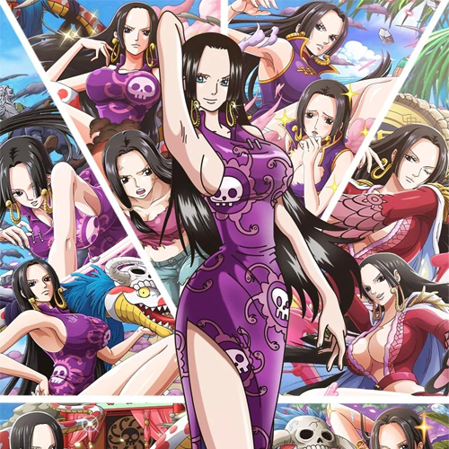
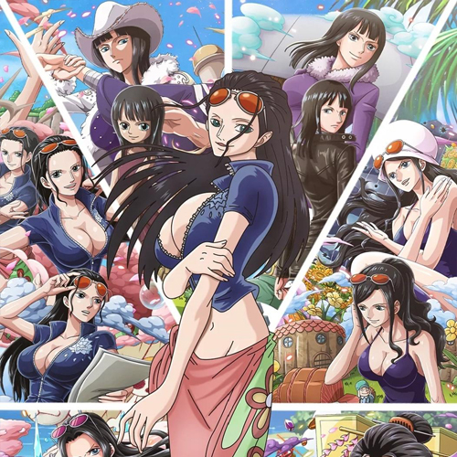
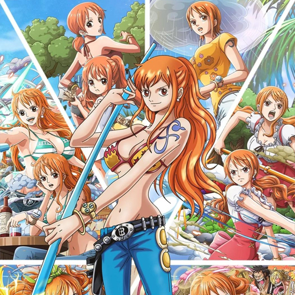

女帝
波雅·汉库克，漫画《航海王》及其衍生作品中的角色。人称：海贼女帝，是位于无风带女儿岛的海贼国家亚马逊·百合王国的现任皇帝，同时也是九蛇海贼团的船长，其绝世的容颜被世人评价为“世界第一美女”。
查看详情

罗宾
妮可·罗宾，漫画《航海王》及其衍生作品中的角色，草帽一伙的考古学家，出生在西海的考古学之岛“奥哈拉”，奥哈拉的幸存者。“花花果实”能力者，能让身体的任何部位像开花一样绽放在视线范围内的任何有形体的事物上并作出攻击或其他用途。
查看详情

娜美
娜美，漫画《航海王》及衍生作品中的女主角，草帽一伙的航海士，人称“小贼猫”。使用棍术，现在武器为“魔法天候棒”。头脑聪明又机灵，精通气象学和航海术，能用身体感知天气，完美指示航路，是个能精确画出航海图的天才航海士。
查看详情